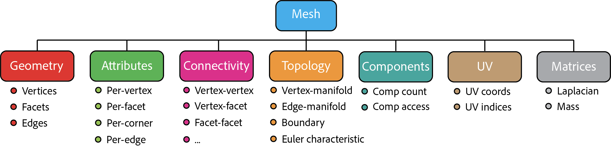

Legacy Mesh Class
Legacy Mesh
Since v6.0.0, Lagrange introduced a new polygonal mesh class that is meant to
replace the original mesh class used throughout Lagrange. The old lagrange::Mesh<> class is
thus deprecated, but will be kept around for a while until we can transition all our code to
the new data structure.
The Mesh class is one of the key data structures used in Lagrange. It provides a standard representation of discretized (triangle or quad) surfaces in 2D and 3D. It is used by nearly all Lagrange functionalities.
It consists of the following components
- Geometry: Vertices, facets, edges.
- Attributes: Scalar or vector field associated with vertices, faces, edges and corners (per vertex-facet pair).
- Connectivity: Vertex-vertex, vertex-facet, facet-facet, edge-facet adjacency matrices.
- Topology: Manifold/non-manifold check, boundary edge extraction.
- Components: Lists of facet indices that form connected components.
- UV: UV coordinates and indices.
- Matrices: Cache for discrete differential geometry matrices such as Laplacian.

Terminology
Throughout the documentation, we will consistently use the following terms:
-
A vertex of a mesh is point on the surface. It is typically defined by its coordinates (
(x,y,z)in 3D and(x,y)in 2D). -
A facet of a mesh is an oriented polygon that represent a piece of the surface. A facet is typically either a triangle or a quad. It is defined by an ordered list of vertex indices that form its boundary (
[i,j,k]for triangle and[i,j,k,l]for quad).
Template Parameters
The Mesh class's full signature is
lagrange::Mesh<VertexArray, FacetArray>;
It takes two template parameters, both are based on Eigen matrix type:
-
VertexArrayis the Eigen matrix type for representing vertex arrays. It is typically anbydimmatrix, wherenis the number of vertices (orEigen::Dynamic) anddimis either 2 or 3 depending on the dimension of the ambient space.lagrange::Vertices2Dandlagrange::Vertices3Dare two possible example types forVertexArrayin 2D and 3D. -
FacetArray: is the Eigen matrix type for representing facet arrays. It is typically ambysmatrix, wheremis the number of facets (orEigen::Dynamic) andsis the number of vertices per facet (3 for triangle mesh and 4 for quad mesh).lagrange::Trianglesandlagrange::Quadsare two example types forFacetArray.
In addition to VertexArray and FacetArray, two important types are inferred:
-
Scalaris the type for representing a floating point number. Typically it isfloatordouble. It is defined as the coefficient type ofVertexArray(i.e.VertexArray::Scalar). -
Indexis the type for representing a index. Typically, it isintorsize_t. It is defined as the coefficient type ofFacetArray(i.e.FacetArray::Scalar).
Note
In Lagrange, we often use the type alias MeshType to represent a
specific instantiation of the Mesh class. It is equivalent to:
using MeshType = Mesh<VertexArray, FacetArray>;
Naming Convention
Within this doc, we use the following naming convention when referring to mesh objects:
meshis used for naming raw objects (MeshType).mesh_ptris used for raw pointers (MeshType*).mesh_refis used for l-value references (MeshType&).mesh_sharedis used for shared pointers (std::shared_ptr<MeshType>).mesh_uniqueis used for shared pointers (std::unique_ptr<MeshType>).
Creation
It is easy to create a Mesh object from raw data:
// Generate raw data for a single triangle.
lagrange::Vertices3D vertices(3, 3);
vertices << 0.0, 0.0, 0.0,
1.0, 0.0, 0.0,
0.0, 1.0, 0.0;
lagrange::Triangles facets(1, 3);
facets << 0, 1, 2;
// Create a mesh object
auto mesh_unique = lagrange::create_mesh(vertices, facets);
The return type of lagrange::create_mesh method is a unique pointer of a
Mesh object. Note in this case, the matrices vertices and
facets are copied into the mesh object. If we are certain these matrices
will outlive the mesh object, we can avoid the copies with:
auto mesh_unique = lagrange::wrap_with_mesh(vertices, facets);
If we want to move the data
from vertices and facets to the mesh object:
auto mesh_unique = lagrange::create_mesh(
std::move(vertices),
std::move(facets));
A Mesh class object can also be loaded from a file. In this case, one needs
to explicitly specify the VertexArray and FacetArray types:
using VertexArray = lagrange::Vertices3D;
using FacetArray = lagrange::Triangles;
using MeshType = lagrange::Mesh<VertexArray, FacetArray>;
auto mesh_unique = lagrange::load_mesh<MeshType>("filename.obj");
It is often necessary to convert a unique pointer to shared pointer or raw pointer to invoke Lagrange functions. It can be done easily:
#include <lagrange/common.h>
// Get a reference
auto& mesh_ref = *mesh_unique;
// `mesh_ref` is of type `MeshType&`.
// Convert to shared_ptr.
auto mesh_shared = lagrange::to_shared_ptr(mesh_unique);
// `shared_mesh` is of type `std::shared_ptr<MeshType>`
assert(mesh_unique == nullptr);
// Get a raw pointer.
// Warning: Never (!!) wrap the same raw pointer into
// a new unique_ptr or shared_ptr.
MeshType* mesh_ptr = mesh_shared.get();
Geometry
The Mesh class provides a number of handy functions for access geometric data stored in it, for example:
const auto dim = mesh.get_dim();
const auto vertex_per_facet = mesh.get_vertex_per_facet();
const auto num_vertices = mesh.get_num_vertices();
const auto num_facets = mesh.get_num_facets();
To access the raw vertex/facet matrix:
const auto& vertices = mesh.get_vertices();
const auto& facets = mesh.get_facets();
Connectivity
Connectivity can be optionally initialized and stored in the Mesh class as adjacency lists. For example:
mesh.initialize_connectivity();
assert(mesh.is_connectivity_initialized());
// To get vertices adjacent to vertex v0:
const auto& v0_adj_vertices =
mesh.get_vertices_adjacent_to_vertex(v0);
// To get facets adjacent to vertex v0:
const auto& v0_adj_facets =
mesh.get_facets_adjacent_to_vertex(v0);
// To get facets adjacent to facet f0:
const auto& f0_adj_facets =
mesh.get_facets_adjacent_to_facet(f0);
// Example usage:
for (const auto fi : f0_adj_facets) {
// `fi` and `f0` are adjacent.
}
Note
All returned values are of type MeshType::IndexList, which is an
alias of std::vector<MeshType::Index>.
Edge Data
An edge in lagrange is an object containing two vertex indices. lagrange::EdgeType takes an Index as a template parameter (e.g. lagrange::EdgeType<int>(0, 1)). Edge is defined in lagrange::Mesh class as an alias to lagrange::EdgeType<Index>.
Note that an edge does not define a direction, and Edge(v1, v2) == Edge(v2, v1). Never use Edge to represent a directed edge.
Edge data can be initialized and stored in the Mesh class. This consists of the following data:
std::vector<Edge>: A list of edges of the mesh. Edge indices indicate positions in this vector. Edge data below and edge attributes use the same indices.std::vector<std::vector<Index>>: Lists the facets adjacent to each edge.std::unordered_map<Edge, Index>: Maps each edge to its index.
mesh.initialize_edge_data();
const auto num_edges = mesh.get_num_edges();
bool boundary = mesh.get_is_edge_boundary({v1, v2});
// iterate over all edges
for (const auto& edge : mesh.get_edges()) {
}
// prefer using indices to avoid multiple map look-ups
for (Index e_idx = 0; e_idx < num_edges; ++e_idx) {
for (auto Index f : mesh.get_edge_adjacent_facets(e_idx)) {
// f is an adjacent facet
}
}
Components
A mesh could contain multiple connected components. To extract connected components:
mesh.initialize_components();
assert(mesh.is_components_initialized());
const auto num_comps = mesh.get_num_components();
const auto& comps = mesh.get_components();
assert(num_comps == comps.size());
// To access the first component:
const auto& comp_0 = comps.front();
for (const auto& fi : comp_0) {
// Facet indexed by fi belongs to comp_0.
}
It is also possible to extract a mapping from facet indices to component indices:
const auto& f_to_c_map = mesh.get_per_facet_component_ids();
assert(f_to_c_map.size() == mesh.get_num_facets());
const auto num_facets = mesh.get_num_facets();
for (Index fi=0; fi < num_facets; fi++) {
// Facet fi belongs to component f_to_c_map[fi].
}
Topology
A mesh is called vertex-manifold if and only if the 1-ring neighborhood of all its vertices are topologically equivalent to a disc. Similarly, a mesh is called edge-manifold if and only if all of its edges are adjacent to at most 2 facets.
Lagrange mesh has build-in supports for querying these topological properties:
mesh.initialize_topology();
assert(mesh.is_topology_initialized());
if (mesh.is_vertex_manifold()) {
...
}
if (mesh.is_edge_manifold()) {
...
}
Note
Vertex-manifold is a stronger condition. If a mesh is vertex-manifold, it is automatically implies it is also edge-manifold.
UV
Lagrange mesh has direct support for UV coordinates:
assert(mesh.is_uv_initialized());
const auto& uv_coords = mesh.get_uv();
const auto& uv_indices = mesh.get_uv_indices();
The type of uv_coords is MeshType::UVArray and the type of uv_indices is
MeshType::UVIndices. Both are predefined Eigen matrices using
MeshType::Scalar and MeshType::Index as scalar type. The jth vertex of
facet i has UV coordinates uv_coords.row(uv_indices(i,j)).
Together, uv_coords and uv_indices form a 2D mesh, which can be extracted:
assert(mesh.is_uv_initialized());
auto uv_mesh = mesh.get_uv_mesh();
It is also possible to erase existing UV and assign a new one:
mesh.clear_uv();
mesh.initialize_uv(uv_coords, uv_indices);
Attributes
It is often useful to assign spatially varying scalar field or vector over the surface of the mesh. Lagrange's Mesh class support 4 types of attributes:
- Per-vertex attribute: One value per vertex.
- Per-facet attribute: One value per facet.
- Per-corner attributer: One value per vertex per facet.
- Per-edge attribute: One value per undirected edge.
All attributes has a name and are stored as MeshType::AttributeArray, which is
Eigen matrix of MeshType::Scalar. For example, to create a custom per-vertex
attribute:
MeshType::AttributeArray attr(num_vertices, 1);
// Initialize the `attr` matrix.
mesh.add_vertex_attribute("attr_name");
mesh.set_vertex_attribute("attr_name", attr);
Attribute can be retrieved at any time from its name:
if (mesh.has_vertex_attribute("attr_name")) {
const auto& attr =
mesh.get_vertex_attribute("attr_name");
assert(attr.rows() == mesh.get_num_vertices());
}